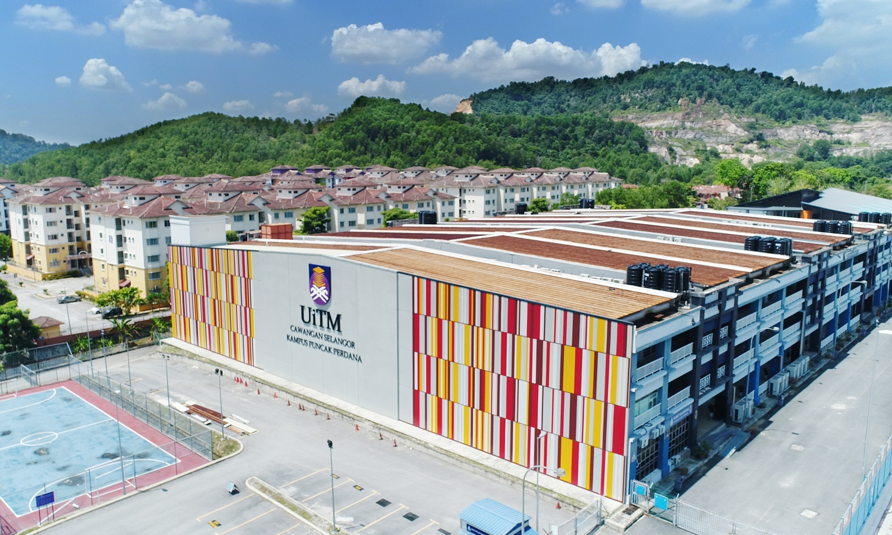
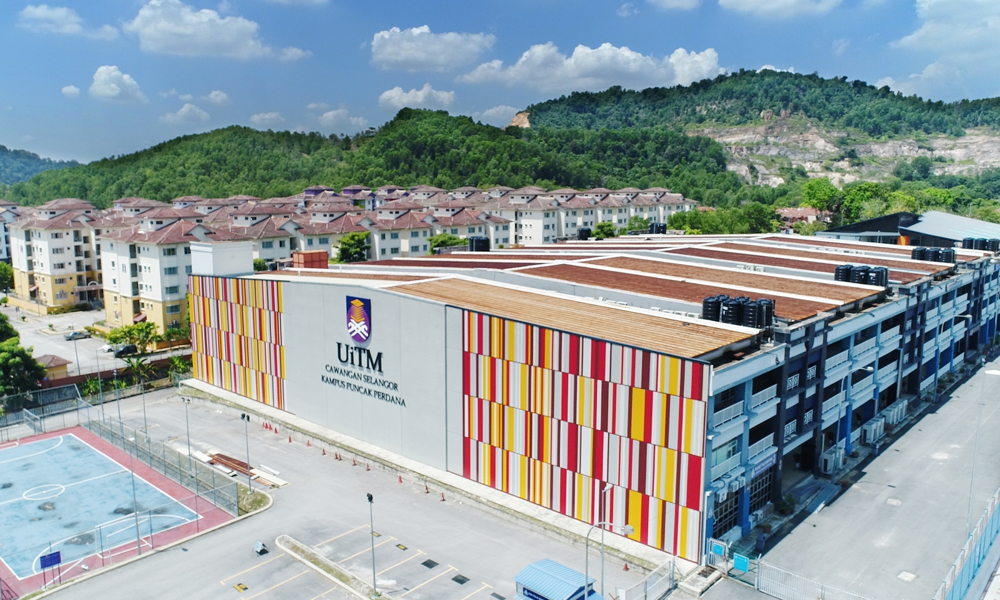

MY EDUCATIONAL JOURNEY
SMK PADANG TEMBAK (Graduated in 2020)
Completed high school with a strong academic record, excelling in core subjects and maintaining consistent high performance. Actively engaged in co-curricular activities, showcasing leadership, teamwork, and creativity through participation in [insert specific activities like sports, clubs, or events]. Graduated with honors, reflecting a balanced and holistic approach to education.
SMK TINGGI SETAPAK (Graduated in 2022)
Successfully completed the Sijil Tinggi Persekolahan Malaysia (STPM) with commendable academic achievements, demonstrating strong analytical and problem-solving skills across key subjects. Actively participated in various co-curricular activities, honing leadership, teamwork, and organizational abilities through [mention specific activities or roles if applicable]. Graduated with a well-rounded profile, reflecting both academic excellence and active community involvement.
UiTM PUNCAK PERDANA (Graduated in 2024)
Earned a Bachelor's degree in Information Science with a strong academic track record, consistently achieving excellent results across core and elective courses. Demonstrated a deep understanding of system management, complemented by effective research and critical thinking skills. Graduated with honors, reflecting dedication, hard work, and a commitment to academic excellence